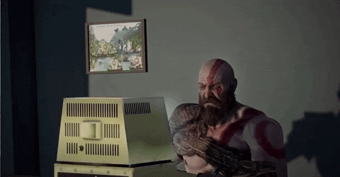
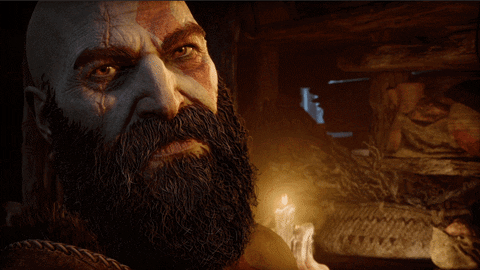
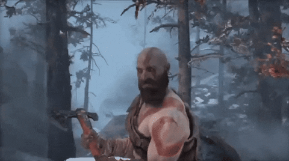

Software:
Everysince I discovered the first computer (thanks to my brother) I was facinated
with
the
idea of having
unlimited possibilites on a screen. Then I discovered the Zukerberg story which lead me to pursue
career
in
computer engineering. But I'm at the level that I hoped I'd be with programming and engineering so
I've
started from fundamentals of programming and I challenged myself to land a developer job in upcoming
6
months (today is august 7, 2023).

Sound:
Music has always been something I've been interested in, I also wanted to create
immersive musical experience like Hans Zimmer and Ludwig Goransson. Then I discovered the duo of
Billie
Eilish and Finieas and I was also fortunate enough to have super talented sister like Billie growing
up,
Although I am no way near the level of Finieas I really want to make music with my sister Mishwa and
express my self through this incredible artform.

Stories:
My brother Piyu who gave me the most valuable gift of my life "The gift of
Curiosity". Along with computers he also introduced me to the world of amazing stories like The
Batman
Triology, Prince of Persia, Inception, Spiderman, Tombraider, God of War etc. this videogames and
movies
are preety much foundation of I am who I am today. Me an my brother used to go on long walks and
talk
about films we can make, stories we can right etc. Despite, our huge ideas we never actually were
able
to make somethinghappen due to our lack of time together but I for sure that in upcoming years there
is
a future where we are finally able to pursue what we've always been facinated about.